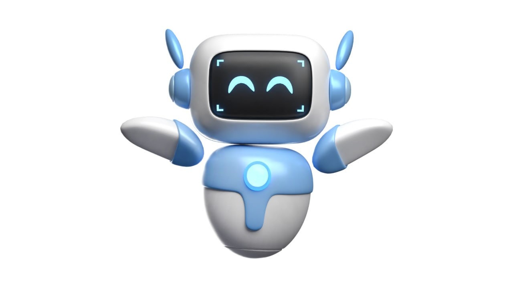

أنوبي
(اضغط مرتين للإيقاف)
اللغة النوبية ليست مجرد وسيلة للتواصل، بل كانت "السلاح السري" الذي حسم أعظم معارك مصر الحديثة.
بدأت القصة مع البطل الصول "أحمد إدريس"، الذي لاحظ أثناء خدمته العسكرية أن العدو ينجح دائماً في التقاط الشفرات اللاسلكية وفك رموزها.
بذكاء فطري، اقترح إدريس استخدام اللغة النوبية كشفرة للتواصل.
لماذا كانت مستحيلة الكسر؟ لأن اللغة النوبية في ذلك الوقت كانت لغة "منطوقة" فقط، ولم تكن لها قواعد مكتوبة، مما جعل أجهزة التنصت لدى العدو تقف عاجزة أمام أصوات لم يسمعوها من قبل.
تم اختيار مجندين من أبناء النوبة لنقل الأوامر، حيث كانت كلمة "أولوم" تعني تمساحاً (للإشارة للدبابة)، و"إيريد" تعني غراباً (للإشارة لطائرات الاستطلاع). بفضل هذه الشفرة، تحرك الجيش المصري في صمت تام وحقق نصر أكتوبر العظيم، وقد تم تكريم الصول أحمد إدريس من قِبل الرئيس الراحل أنور السادات تقديراً لعبقريته.